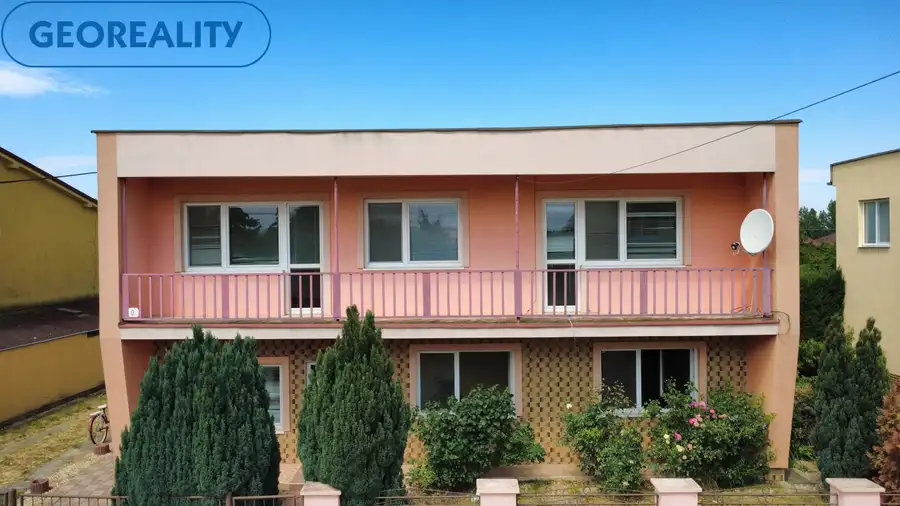
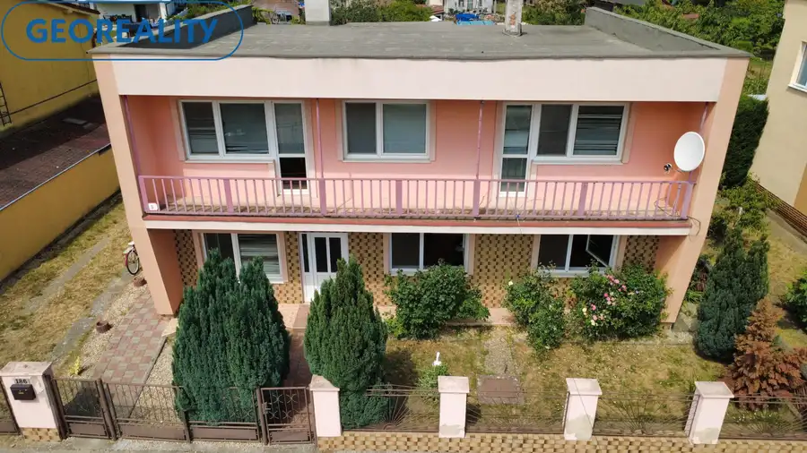
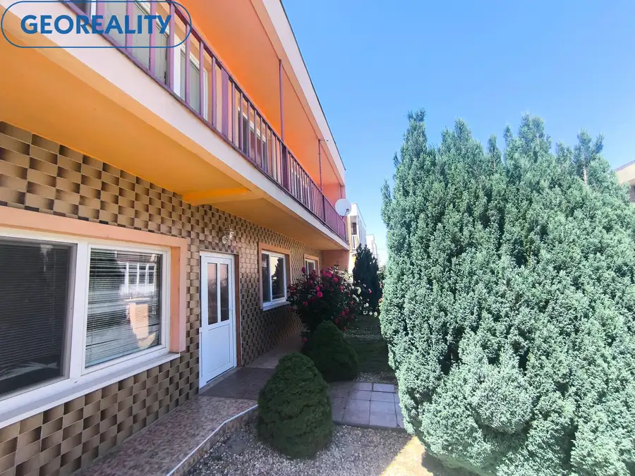
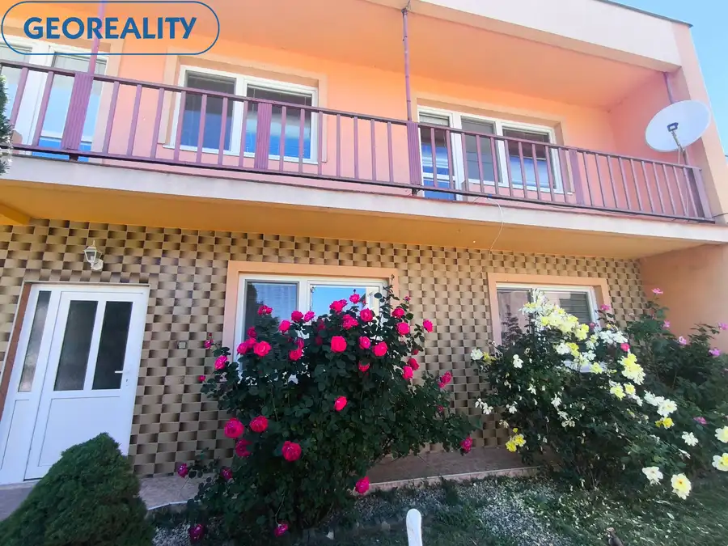
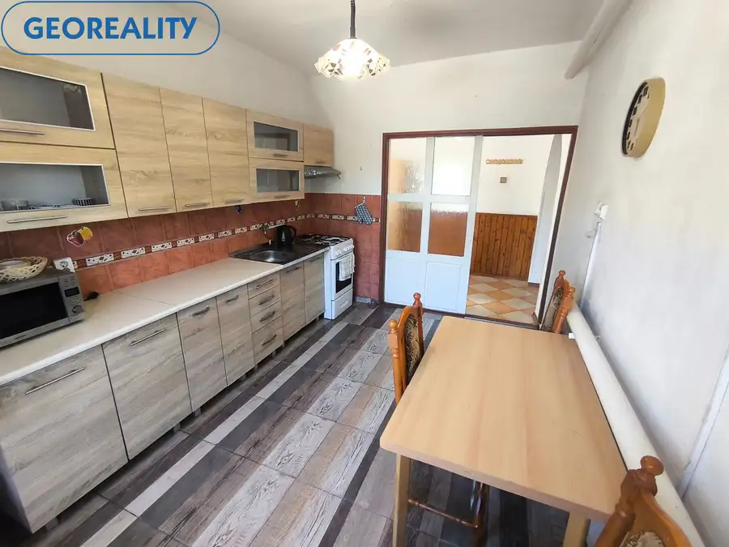
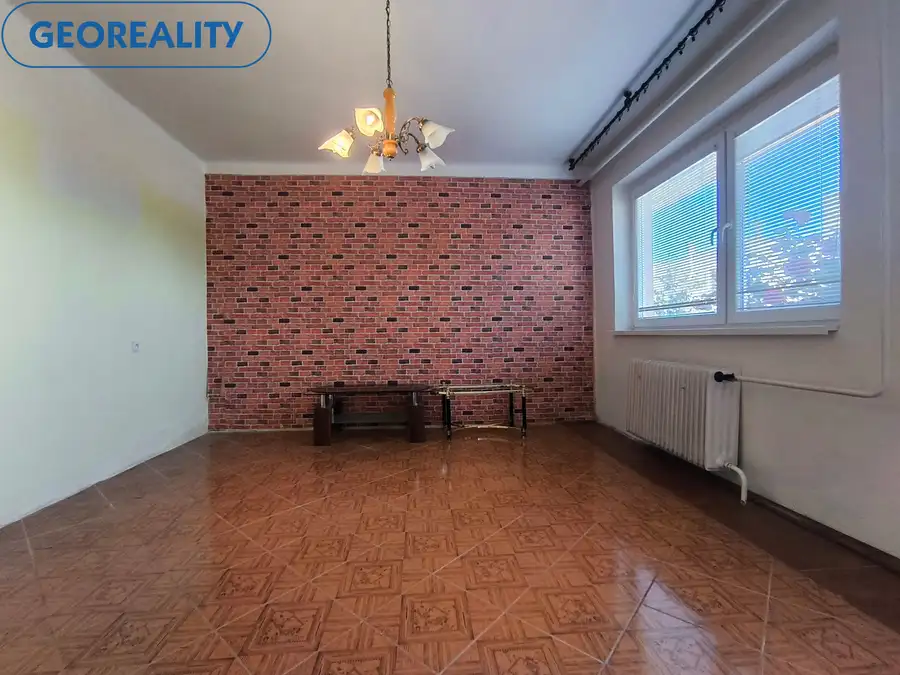
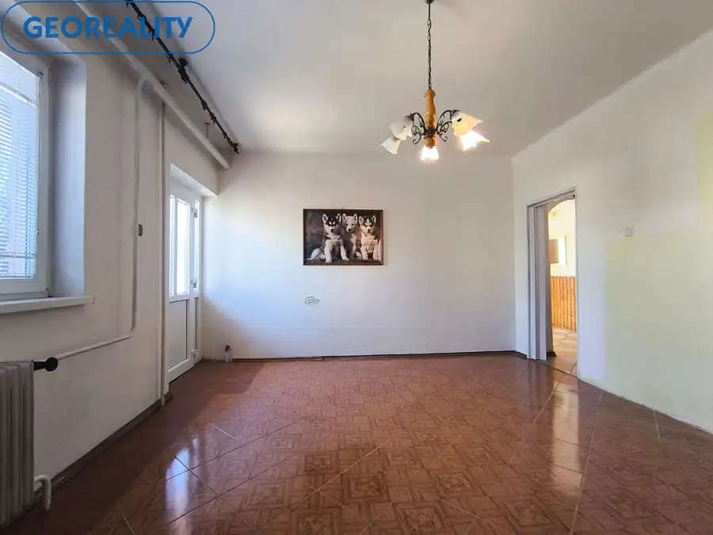
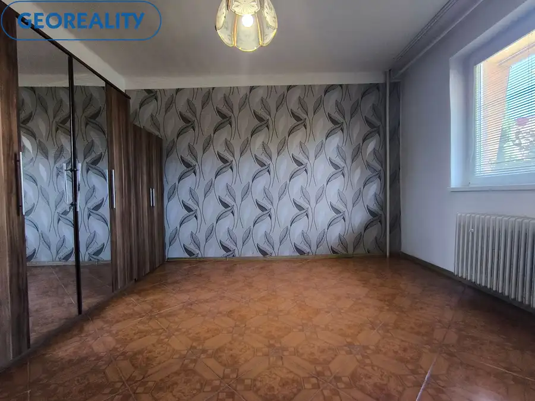
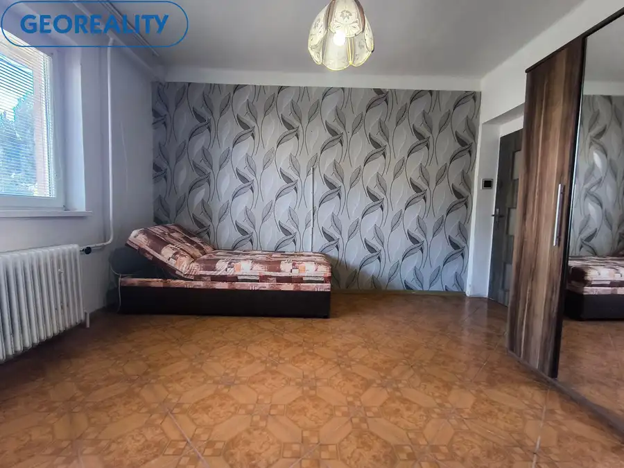

Exkluzívne na predaj veľký 7 izbový dom so záhradou
Maňa









- Plocha688 m²
- StavČiastočná rekonštrukcia
- VlastníctvoOsobné
O nehnuteľnosti
S potešením ponúkame na predaj priestranný dvojgeneračný dom, situovaný v malebnej obci Veľká Maňa, vzdialenej len niekoľko minút od mesta Vráble, Nitra a vyhľadávaných kúpeľov Podhájska. Tento dom, postavený v roku 1979, je ideálnou voľbou pre rodiny, ktoré túžia po komfortnom a všestrannom bývaní s možnosťou rozdelenia na dve samostatné bytové jednotky.**Charakteristika nehnuteľnosti:**- **Rozloha:** Úctyhodných 360 m², čo poskytuje dostatok priestoru pre pohodlné bývanie.- **Záhrada:** Malebná záhrada s rozlohou 328 m², v ktorej sa nachádzajú ovocné stromy (višne) a okrasné rastliny, ideálna na relaxáciu a rodinné stretnutia.- **Stav:** Dom sa vyznačuje dobrou údržbou; podlahy sú približne 10 rokov staré a v zachovalom stave, zatiaľ čo plastové okná, ktoré majú 15 rokov, prispievajú k energetickej efektívnosti nehnuteľnosti.- **Rekonštrukcie:** Strecha bola dôkladne rekonštruovaná pred 7 rokmi, a elektrické rozvody (220/380) boli modernizované pred 15 rokmi, čo zaručuje ich spoľahlivosť.- **Kúrenie:** Plynový kotol, po nedávnej revízii, zabezpečuje efektívne vykurovanie, pričom teplá voda je taktiež zabezpečená plynovým kotlom.- **Inžinierske siete:** Nehnuteľnosť je napojená na mestskú vodu a žumpu.**Dispozícia:**- **Horné podlažie:** Priestranné a vzdušné priestory zahŕňajú terasu, lodžiu, kuchyňu, kúpeľňu, chodbu a štyri priestranné izby, ktoré ponúkajú dostatok svetla a pohodlia.- **Dolné podlažie:** Tu nájdete veľkú chodbu, kuchyňu, tri priestranné izby, špajzu a kúpeľňu, ideálne pre rodinné aktivity a súkromie.**Okolie a dostupnosť:**- V tesnej blízkosti sa nachádza škôlka, potraviny, pizzeria, zmrzlináreň, futbalové ihrisko a MHD, čo zabezpečuje komfortný a bezproblémový život.- Zubár a všeobecný lekár sú k dispozícii priamo v obci, čo pridáva na pohodlí.Tento dom predstavuje ideálnu voľbu pre rodiny, ktoré hľadajú priestranné a komfortné bývanie s možnosťou dvojgeneračného využitia. Neváhajte nás kontaktovať pre dohodnutie obhliadky a zažite jedinečný pocit domova na vlastnej koži! Naše ceny sú vrátane provízie za kompletný servis a sú schválené majiteľom!Nehnuteľnosť je možné kúpiť aj formou hypotéky, ktorú Vám radi a bezplatne sprostredkujeme v rámci našich služieb. Máme dlhoročné skúsenosti aj v oblasti financií a túto službu ocenilo už veľa našich spokojných klientov.Prevedieme Vás celým priebehom obchodu až po samotné odovzdanie nehnuteľnosti.Ak vás moja ponuka zaujala, neváhajte ma kontaktovať, dohodneme si obhliadku na ktorej vám nehnuteľnosť rada ukážem. Využite naše služby a pridajte sa do veľkej skupiny našich spokojných klientov. Tiež vás pozývame na IG georealitylv, na našu FB stránku: Georeality Levice – realitná kancelária, kde môžete pozorne sledovať našu každodennú prácu a tiež na: www.georealitylv.skMaklér: Peter Matejička , Maklér RK, mail: matejicka@georealitylv.sk, tel. 0910 706 020
Parametre
- Doprava
- MHD
- Druh
- Rodinný dom
- Druh domu
- Dvojgeneračný
- Dátum zverejnenia
- 28. 05. 2026
- Energetický certifikát budovy
- nie je
- Plocha pozemku
- 328 m²
- Podpivničenie
- Nedostupné
- Počet izieb / miestností
- 7
- Počet kúpeľní
- 2
- Počet nadzemných podlaží
- 2
- Príprava teplej vody
- Prietokový ohrievač (plynový)
- Prístupová komunikácia
- Asfaltová
- Rok kolaudácie
- 1979
- Rok výstavby
- 1979
- Stav nehnuteľnosti
- Čiastočná rekonštrukcia
- Telekomunikácie
- Internet
- Terén pozemku
- Rovinatý
- Typ
- Predaj
- Typ konštrukcie
- Tehlová
- Vlastníctvo
- Osobné
- Vybavenie
- Špajza, Záhrada
- Vybavenie objektu
- Štandardné
- Vykurovanie
- Ústredné
- Zariadenie
- Čiastočne zariadené
- Zastavaná plocha
- 360 m²
- Zdroj tepla
- Zemný plyn
- Úžitková plocha
- 688 m²